Postaw na drzwi, które łączą estetykę z funkcjonalnością i podkreślają charakter Twojego domu już od samego wejścia.
Wikęd to polski producent drzwi zewnętrznych, który łączy nowoczesne wzornictwo z solidnym wykonaniem. Szeroka oferta modeli, kolorów i dodatków pozwala dopasować drzwi do stylu każdego domu, zapewniając estetykę, komfort i bezpieczeństwo na co dzień.


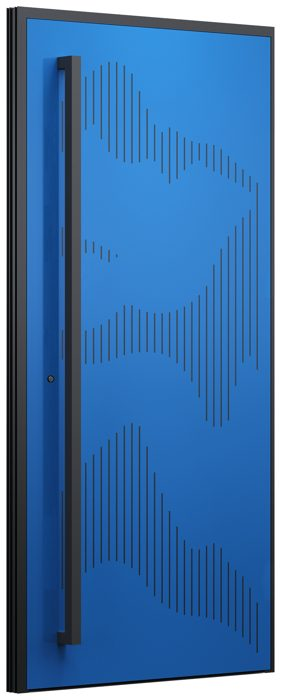
3D01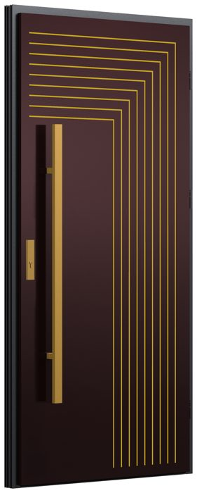
3D02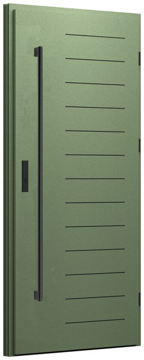
3D03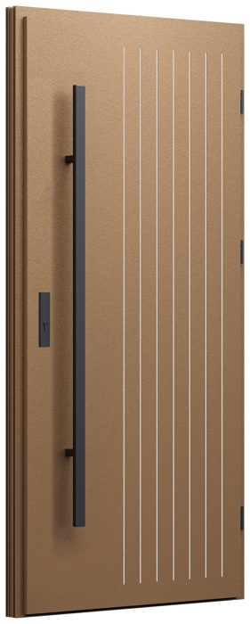
3D04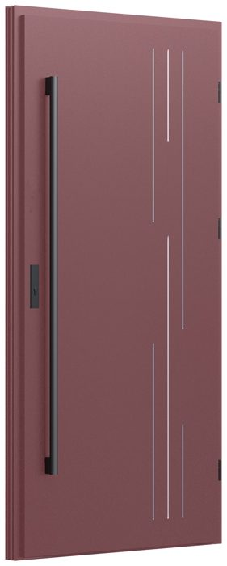
3D05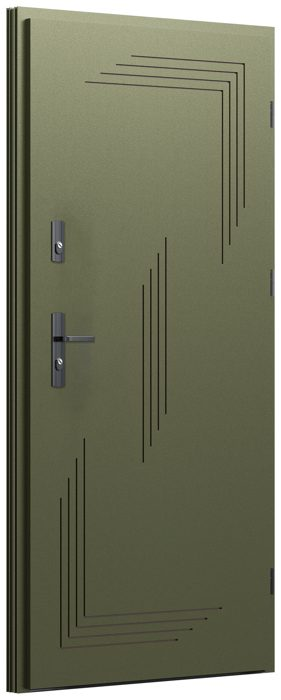
3D06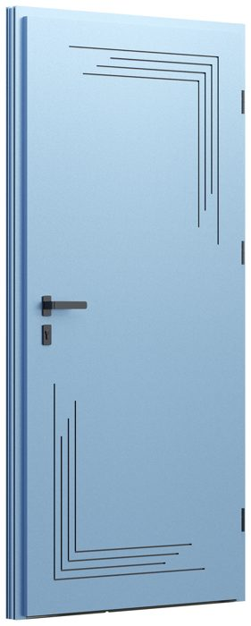
3D07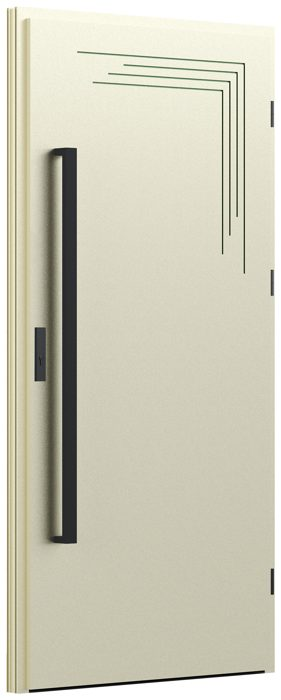
3D08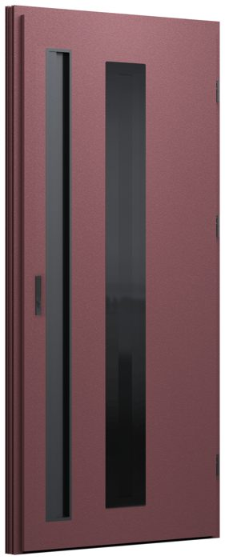
GD01a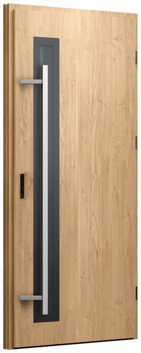
GD01b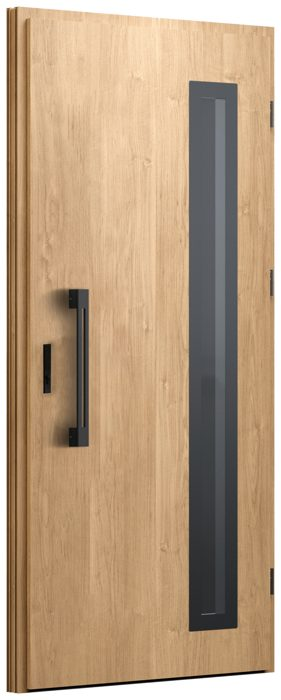
GD01c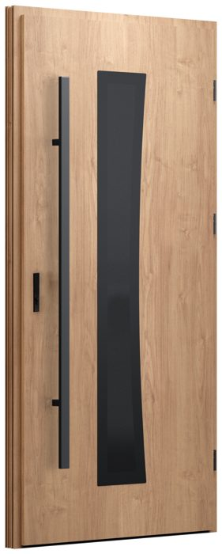
GD02a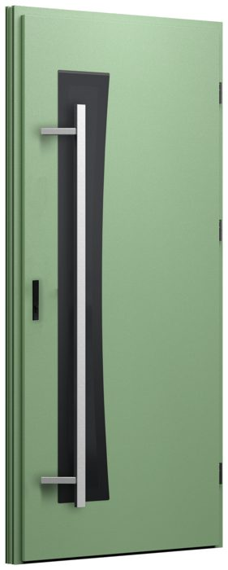
GD02b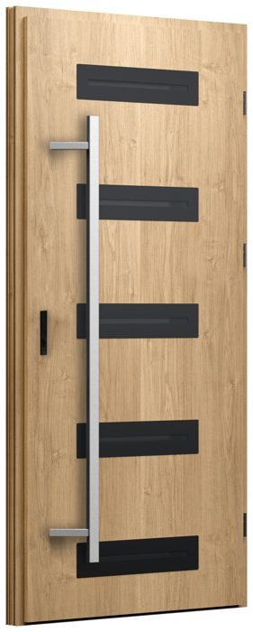
GD03a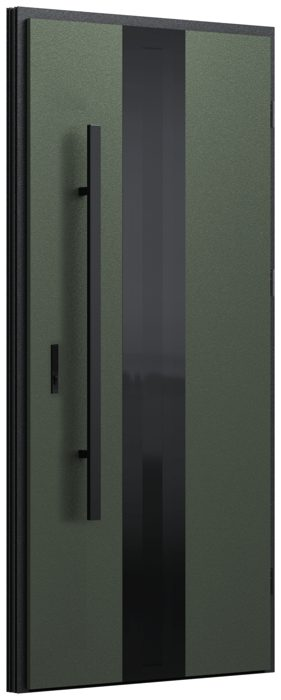
GD04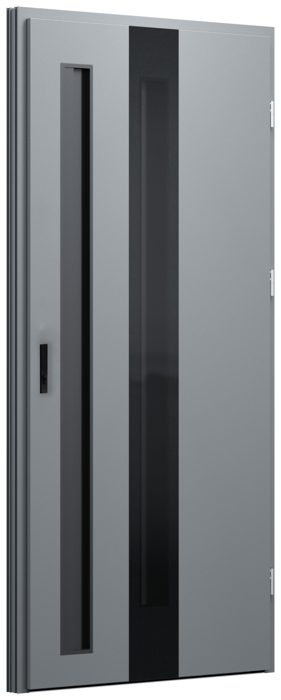
GL01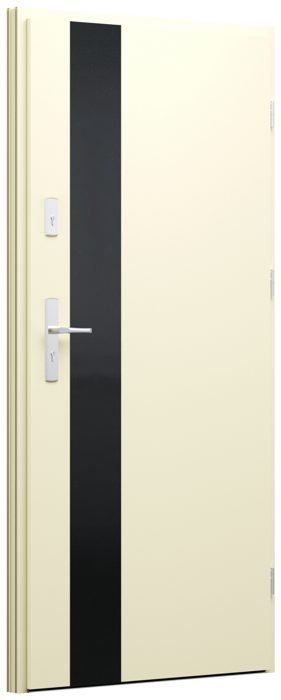
GL01a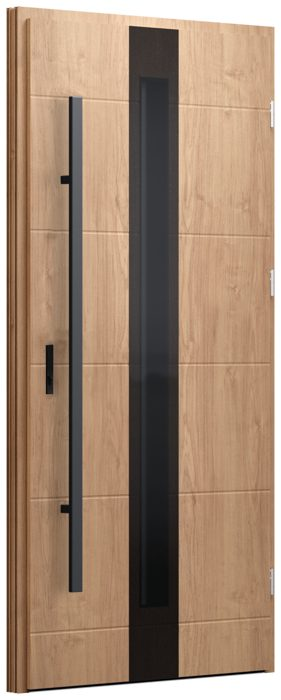
GL02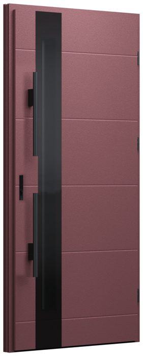
GL02a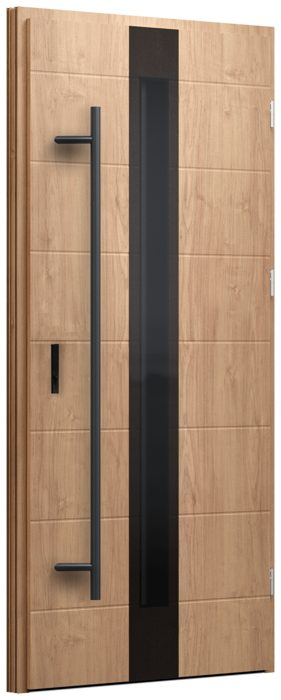
GL02b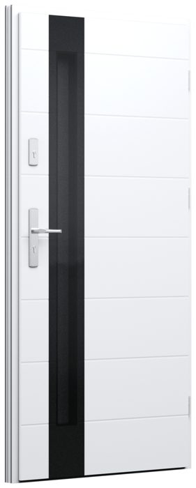
GL02c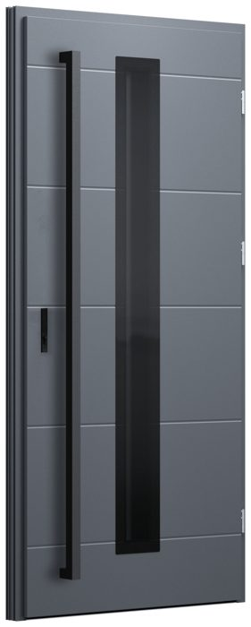
GL03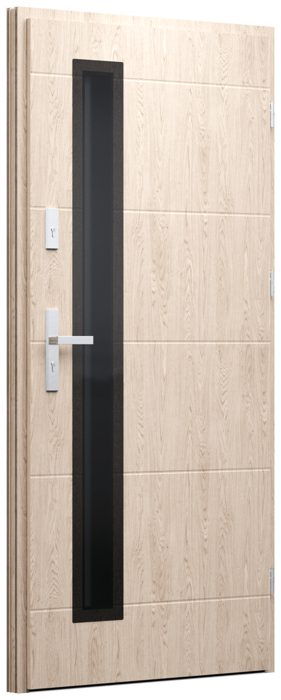
GL03a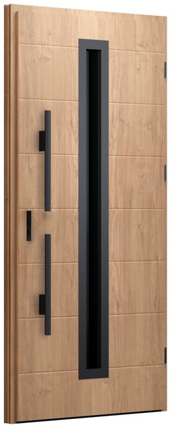
GL03b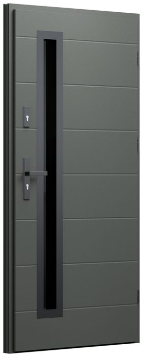
GL03c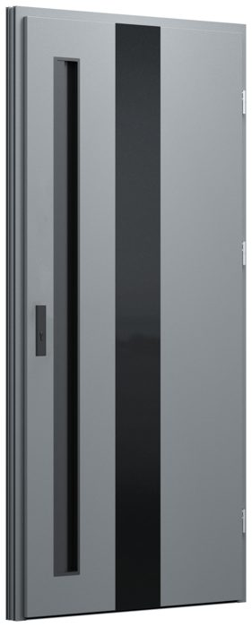
GF01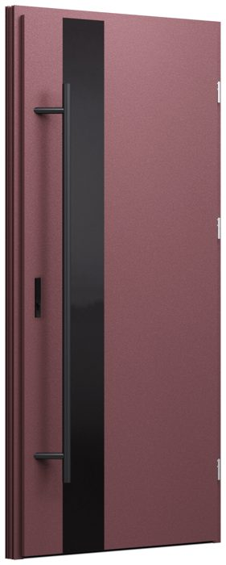
GF01a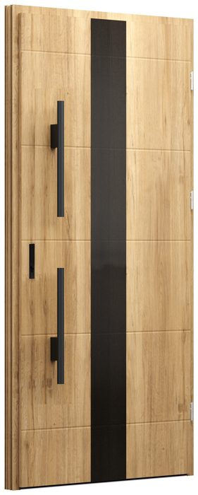
GF02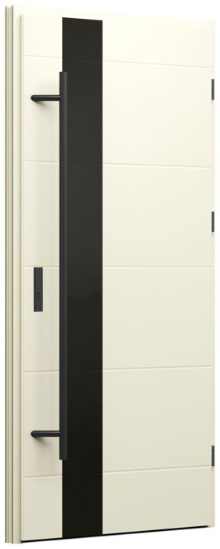
GF02a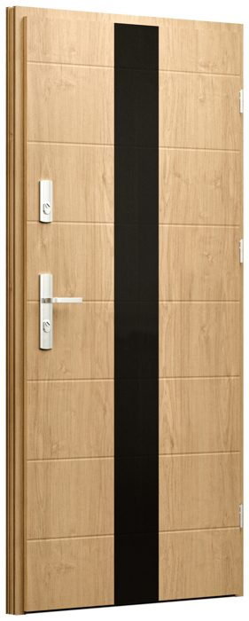
GF02b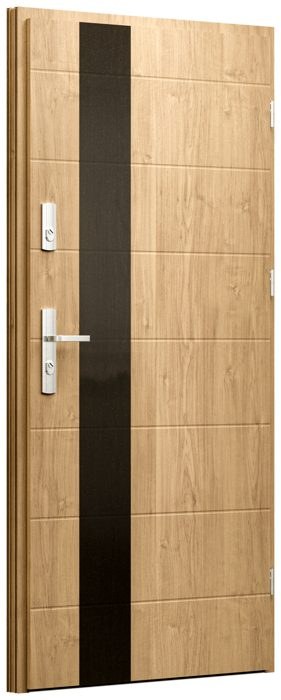
GF02c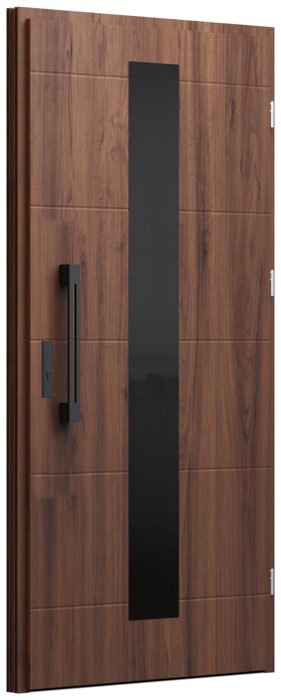
GF03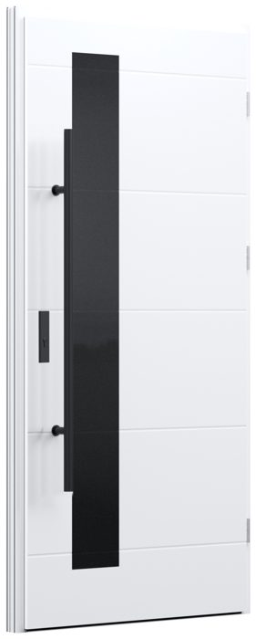
GF03a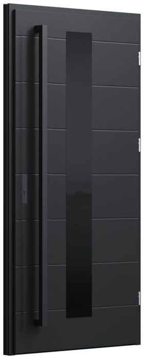
GF03b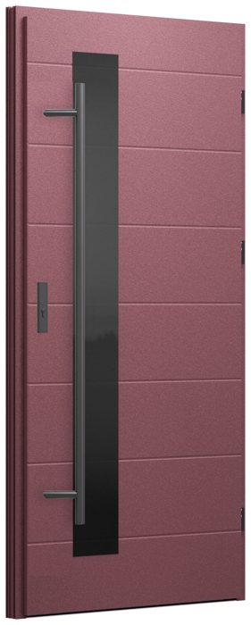
GF03c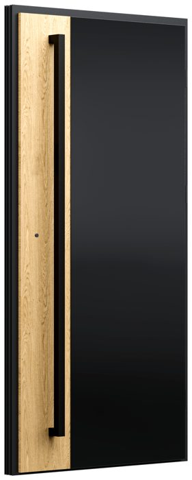
GF04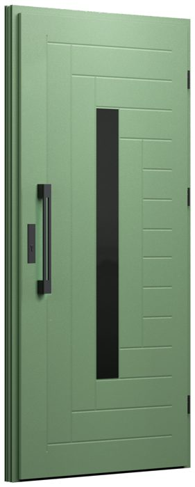
GF05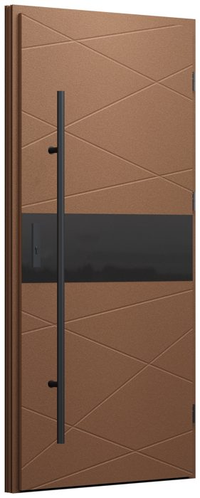
GF06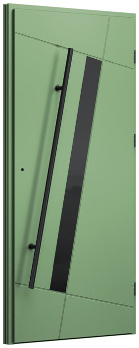
GF07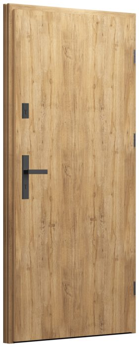
1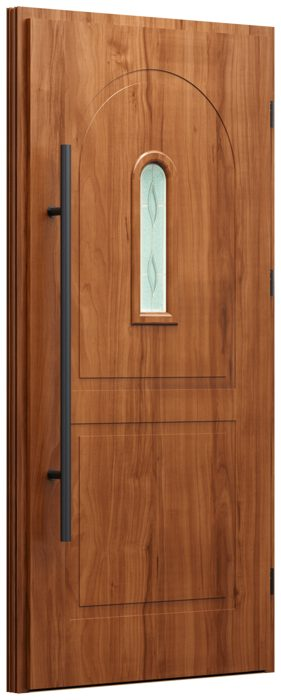
3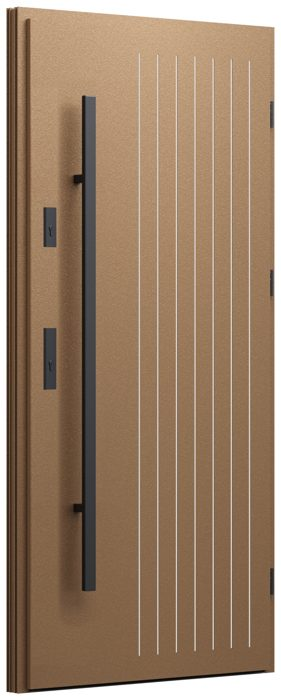
4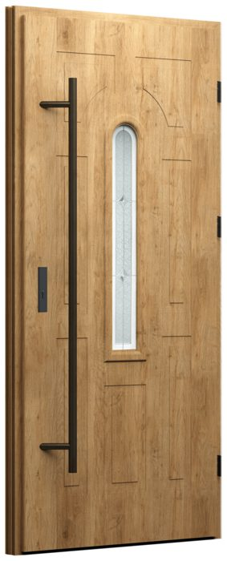
5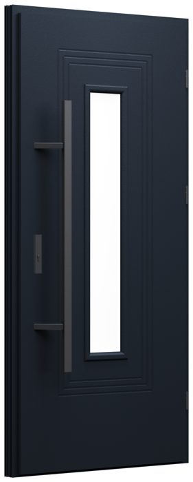
6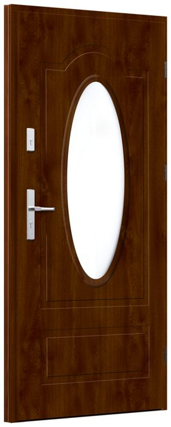
8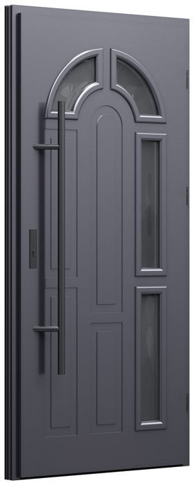
9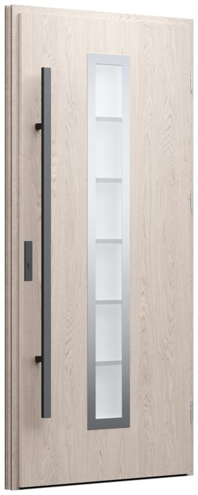
12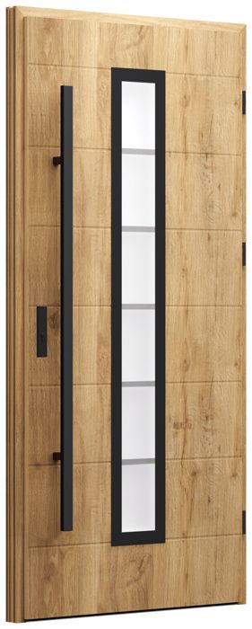
12c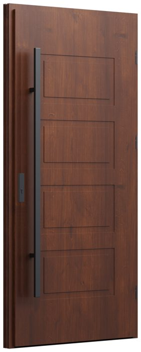
13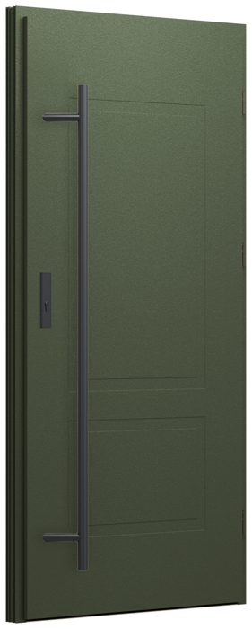
142121a222323a242525a25b25c2626a26b26c26d26e26f26g26h26i26j26k272829a3030a30b3131a3232a32b34363737a3838a394040a4141a39a39b41b424343a43b43c4444a44b44c4547484950RL1RL2aRL2bRL3RL3aRL3bRL4RL4aRL4bRL5RL5aRL5bRL6RL6aRL7RL7bRL7aML01ML02ML03WL01WL02WL03S1S2S3S4S5S6S7FI01aFI01bFI01cFI01dFI02aFI02bFI03aFI03bFI04aFI04bFI04cFI04dFI04eFI05aFI05bFI05cFI05dFI05eFI06aFI06bFI06dFI06eFI07aFI07bFI07cFI07dFI07eFI08aFI08bFI10aFI10bFI11FI12FI13FI14FI15


Oraz pełny wzornik RAL K7 Classic.
Klamka to klasyczne i uniwersalne rozwiązanie. Jest wygodna w codziennym użytkowaniu, dostępna w wielu kształtach i kolorach, dzięki czemu łatwo dopasować ją do stylu drzwi oraz pozostałych elementów stolarki.
Pochwyt to propozycja dla osób, które cenią nowoczesny design. Doskonale komponuje się z prostymi, minimalistycznymi drzwiami. To doskonały wybór dla osób, które szukają niestandardowych rozwiązań i chcą wyróżnić wejście do swojego domu.
 Alfa
Alfa Alfa Vision Inox
Alfa Vision Inox Beta
Beta Beta + czytnik linii papilarnych
Beta + czytnik linii papilarnych Queen
Queen Stripe Inox
Stripe Inox Toro Inox + LED
Toro Inox + LED Fusion z podświetleniem
Fusion z podświetleniemPrzeszklenie w drzwiach zewnętrznych to sposób na doświetlenie wnętrza naturalnym światłem i nadanie wejściu wyjątkowego charakteru. Wybór szyby zależy od tego, ile światła chcesz wpuścić do wnętrza i jaką prywatność chcesz zachować. Do wyboru są różne rodzaje szkła, dzięki którym można dopasować drzwi zarówno do nowoczesnej, jak i klasycznej architektury domu.
Otwierasz drzwi z aplikacji — także wtedy, gdy nie ma Cię w domu.
Dajesz dostęp wybranym osobom i decydujesz, kiedy mogą wejść.
Sprawdzasz w telefonie, czy drzwi są zamknięte i kiedy były otwierane.
Podświetlenie LED włączasz jednym kliknięciem.
Ochrona antywłamaniowa do klasy RC2
Izolacyjność cieplna Ud od 0,54 W/m²K
Setki wzorów i dowolna kolorystyka
Erkado to polski producent drzwi z ponad 50-letnim doświadczeniem, oferujący szeroki wybór modeli łączących nowoczesny design z funkcjonalnością. Bogata oferta pozwoli Ci wybrać drzwi odpowiadające Twoim oczekiwaniom.


Ud od 0,60 W/m²K w technologii Thermo Hot 88
Zamek listwowy i bolce antywyważeniowe w standardzie
Dopasowanie do otworu w murze co do 1 cm
Ważne są parametry termoizolacyjne, bezpieczeństwo, trwałość, odporność na warunki atmosferyczne oraz wygląd dopasowany do elewacji i stylu budynku.
Tak, dobierając drzwi, można uwzględnić kolorystykę okien, bramy garażowej i pozostałych elementów stolarki, aby uzyskać spójny wygląd całego budynku.
Tak, w przypadku standardowych drzwi zewnętrznych obowiązują wymagania techniczne dotyczące współczynnika Ud (współczynnik przenikania ciepła) — nie może on przekraczać 1,3 W/(m²·K).
Tak! Drzwi są produkowane na indywidualny wymiar, dzięki czemu można idealnie dopasować je do otworu wejściowego oraz projektu budynku. Oferujemy rozwiązania dostosowane do różnych potrzeb – od standardowych drzwi po nietypowe wymiary, naświetla boczne i górne.
Rozmiar drzwi należy dopasować do wymiarów otworu w ścianie oraz warunków technicznych budynku. Przy wyborze warto uwzględnić nie tylko szerokość i wysokość skrzydła, ale również ościeżnicę i sposób montażu. Przed zamówieniem drzwi najlepiej wykonać dokładny pomiar, aby mieć pewność, że będą odpowiednio dopasowane do wejścia.
Drzwi określamy jako lewe lub prawe, patrząc na nie od strony, z której otwierają się do nas. Jeśli zawiasy znajdują się po lewej stronie, drzwi są lewe, a jeśli po prawej — prawe.
Tak! Przygotowujemy bezpłatną wycenę drzwi na podstawie projektu lub zapytania przesłanego mailowo. Możesz również odwiedzić naszą firmę i na miejscu omówić szczegóły inwestycji oraz dobrać odpowiednie rozwiązania. Pomożemy Ci wybrać drzwi dopasowane do Twoich potrzeb i budżetu.
Tak, wykonujemy pomiary drzwi bezpośrednio u klienta, aby jak najlepiej dopasować je do budynku. Pomiar ma charakter wiążący i wiąże się z pobraniem zaliczki na poczet zamówienia. Dzięki temu możemy precyzyjnie przygotować ofertę i przejść do realizacji zamówienia.
Tak, oferujemy demontaż starych drzwi w ramach wymiany stolarki. Zakres prac ustalamy indywidualnie, aby dopasować usługę do potrzeb klienta i specyfiki budynku. Szczegóły demontażu warto omówić już na etapie przygotowywania wyceny.
Tak! Zapewniamy serwis zamontowanych drzwi, ponieważ zależy nam na długotrwałej współpracy i zadowoleniu naszych klientów. Pomagamy również w przypadku problemów z funkcjonowaniem drzwi i w razie potrzeby wykonujemy regulację.
Skontaktuj się z nami — doradzimy technicznie i przygotujemy kalkulację cenową.